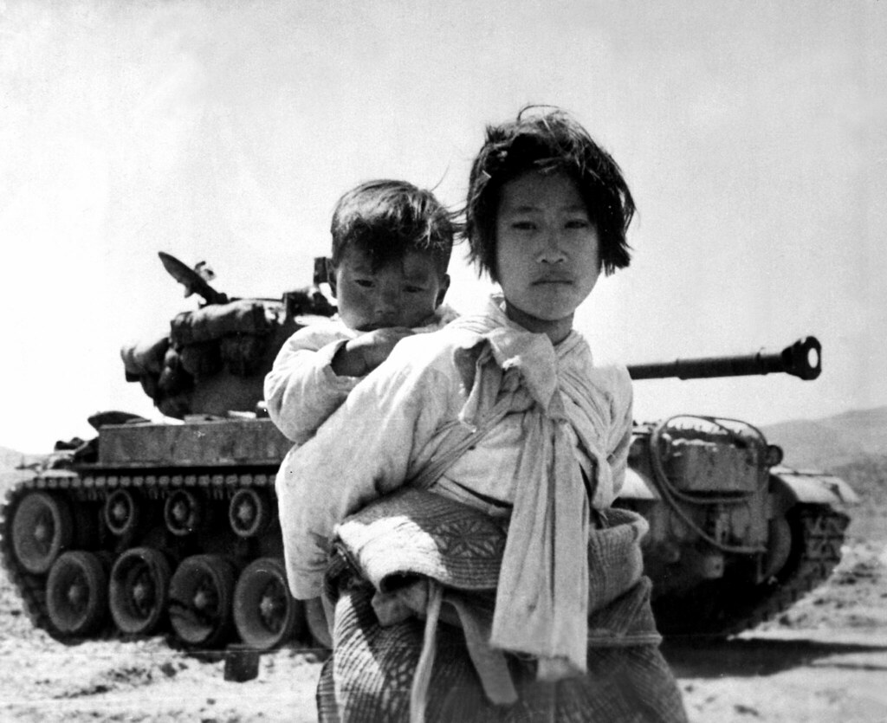
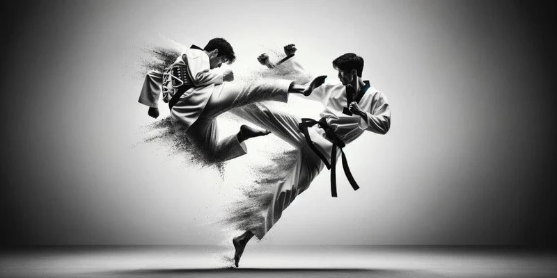

Located the East Asia. The history of South Korea begins with the Japanese surrender on September 2, 1945. At that time, South Korea and North Korea were divided, despite being the same people and on the same peninsula. In 1950, the Korean War broke out. North Korea overran South Korea until US-led UN forces intervened. At the end of the war in 1953, the border between South and North remained largely similar. Tensions between the two sides continued. South Korea alternated between dictatorship and liberal democracy. It underwent substantial economic development.

Politics
The president of South Korea is Yoon Suk Yeol. He might be facing impeachment because he declared martial law in a speech, giving the military commander unlimited authority to make and enforce laws. Martial law suspends all existing laws which means there can be a suspension of normal civil rights and the use of military law on the civilian population. Currently civilians created violent protests against the president in the city of Seoul.
Tae Kwon Do
Fun fact: Tae Kwon Do, the Korean art of combat is based on the earlier form of the Korean self-defense known as Tae Kwon. The name Tae Kwon Do was officially adopted for this martial art in 1955 by the South Korean General Choi Hong-Hi, the founder of Tae Kwon Do.

Cuisine
Korean BBQ has a long history dating back to the Goguryeo Dynasty in 37 BC, where grilled meat was a common part of the royal court cuisine. However, it was not until the Joseon Dynasty in the 17th century that meat dishes became more accessible to the general public. Beef was a rare commodity, limited to the wealthy and nobility, while pork was more widely available and became the main meat for Korean BBQ. Korean BBQ as we know it today began to develop in the 1940s and 1950s, following the Korean War when the US military introduced new grilling techniques and equipment to Korean food culture. This led to the creation of new and innovative Korean BBQ dishes, such as bulgogi (marinated beef) and galbi (grilled beef short ribs). Kimchi is also a common side dish that includes cabbage, carrots, and cucumber marinated in salty brine.
Songpyeon are traditional rice cakes in the shape of a moon cresent filled with red beans, sesame seeds, chestnuts, or honey. Often made for the celebration of Chuseok, the Korean Thanksgiving. Also, Dalgona candy is a Korean Honeycomb Toffee featured in the squid game. To play the Dalgona game, you hold your Dalgona against a plate and using a needle you carefully cut the edges of the shape without breaking the shape.